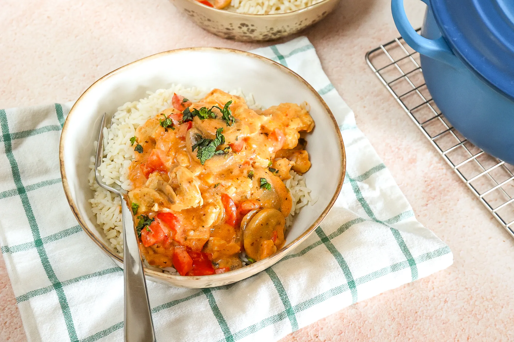

kip stronganoff met rijst

Ingredienten
- 300 gr kipfilet
- 1 ui
- 2 tenen knoflook
- 2 paprika's
- 200 gr champignons
- 1,5 tl paprikapoeder
- 2 tl oregano
- 2 el tomatenpuree
- zout en peper
- 200 gr rijst
- 2 el bloem
- 250 ml bouillon
- 100 ml creme fraiche (voor warme gerechten)
Bereiding
- Kook de rijst volgens de instructies op de verpakking.
-
Snipper de ui en snijd de knoflook fijn. Snijd de paprika in stukjes.
- Maak de champignons schoon en snijd in plakjes.
-
Snijd de kipfilet in stukjes. Breng de kip op smaak met zout en peper.
-
Doe een klontje boter in een (hapjes)pan en bak de kip rondom aan.
-
Voeg dan de ui, knoflook, paprika, kruiden en champignons toe en bak
8-10 minuten mee.
- Voeg de bloem toe en meng alles door elkaar.
- Doe de tomatenpuree erbij en bak 1 minuut mee.
- Voeg de bouillon toe en meng alles nogmaals goed door elkaar.
- Als laatste kan de crème fraiche erbij.
-
Als de creme fraiche is gesmolten en de saus is wat ingedikt, kun je het
vuur uitzetten.
- Serveer de kip stroganoff met rijst.